Tamba, Hyogo: things to do, food and stays
Tamba · Hyogo
Tamba
Highlighted on the Hyogo map.
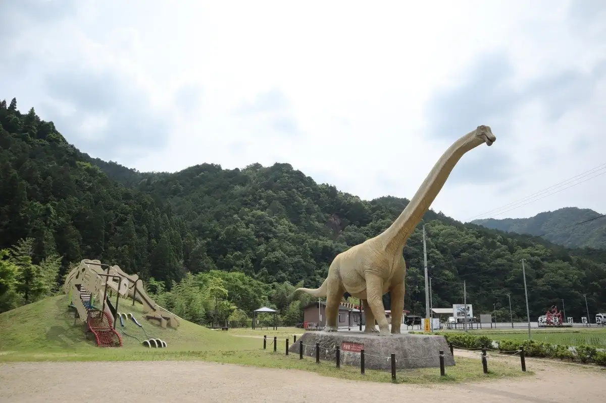
Stay
ホテルルートイン丹波-氷上インター-
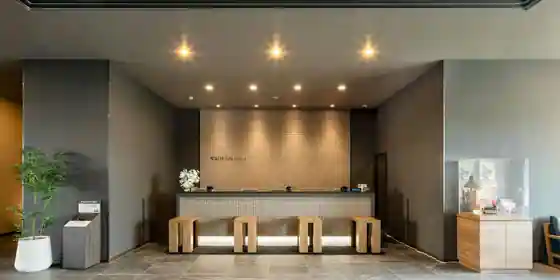
Hotel Route Inn Tanba - Hikami Inta
里山ホテルかねのね丹波
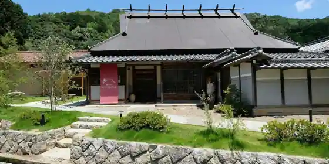
Satoyama Hotel Kanenone Tanba
Hotel in Kashiwabara, Tamba with a renovated traditional house and a quiet countryside setting.
丹波の宿 恵泉
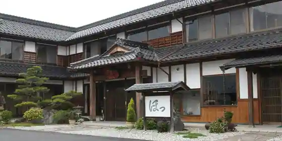
Tanba No Yado Keisen
キャンプリゾート森のひととき
Kyanpu Resort Mori Nohitotoki
ホテルルートイン丹波
Hotel Route Inn Tanba
Hotel at Danjobetsujinko Onsen in Hikami, Tamba with a large communal bath.
HOTEL R9 The Yard 丹波
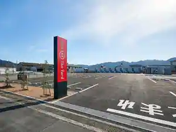
HOTEL R9 The Yard Tanba
ホテル丹波ヒルズ 氷上インター （ＢＢＨホテルグループ）
Hotel Tanba Hiruzu Hikami Inta (BBH Hotel Gurupu)
Hotel in Kashiwabara, Tamba with parking.
モニカ リゾート
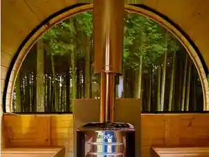
Monika Resort
グリーンホテル松風
Gurin Hotel Matsukaze
Hotel in Kashiwabara, Tamba; 10-minute walk from Serunakayokujogaureshikashiwabara Station.
フジヤホテル
Fujiya Hotel
Hotel in Kasuga, Tamba with business travelers and long stays.
竹岡邸
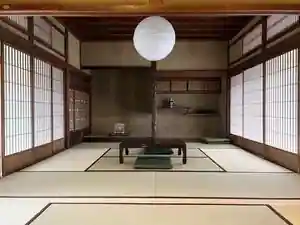
Takeoka Tei
丹波星空グランピング SHIGRA RESORT
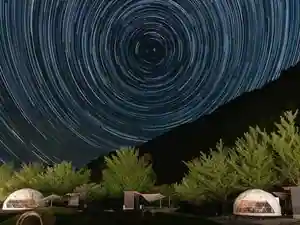
Tanba Hoshizora Guranpingu SHIGRA RESORT
Dining
そばんち
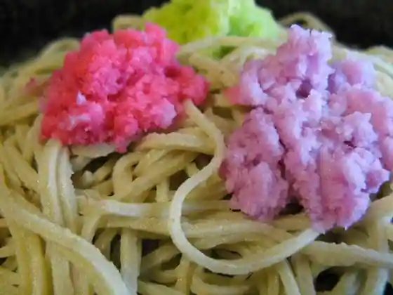
Sobanchi
焼肉 たつみ
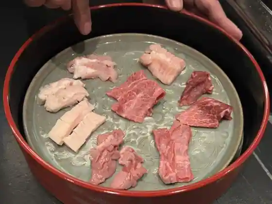
Yakiniku Tatsumi
夢の里やながわ 本店
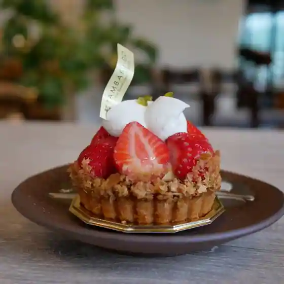
Yume No Sato Yanagawa Hon
三津屋妹尾
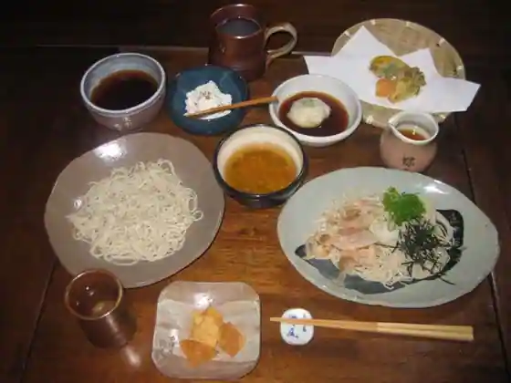
Mitsu Ya Imo
グルメリア但馬 市島店
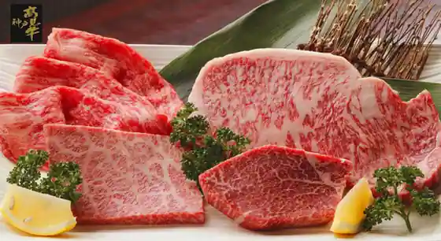
Gurumeria Tajima Ichijima
無鹿リゾート
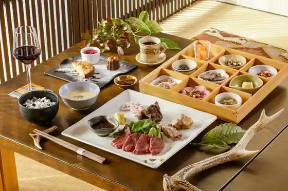
Mu Shika Resort
本場博多とんこつらーめん いっぽし
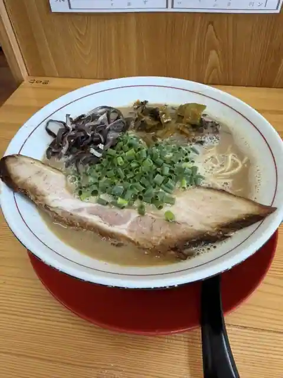
Honba Hakata Tonkotsu Ramen Ipposhi
中島大祥堂 丹波本店
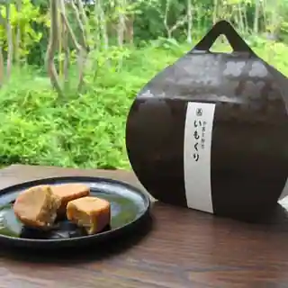
Nakajima Daisho Do Tanba Hon
市島製パン研究所
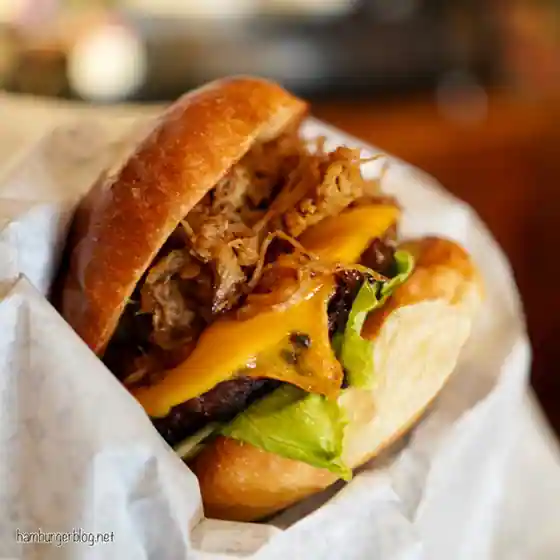
Ichijima Sei Bakery Kenkyusho
柏原町ふくちあん
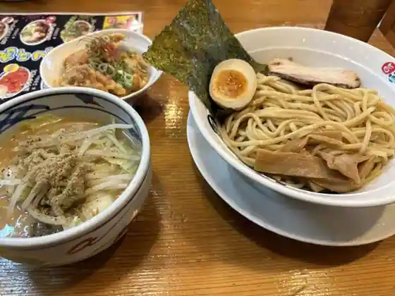
Kashiwabara Machi Fukuchian
キャリー焼菓子店
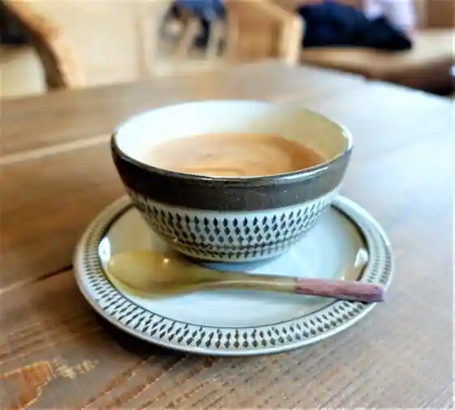
Kyari Yaki Kashi
大名草庵
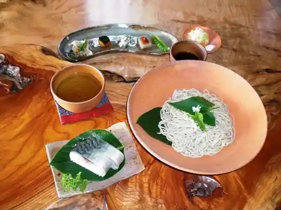
Daimyo Soan
高見牛牧場直売所 安食の郷
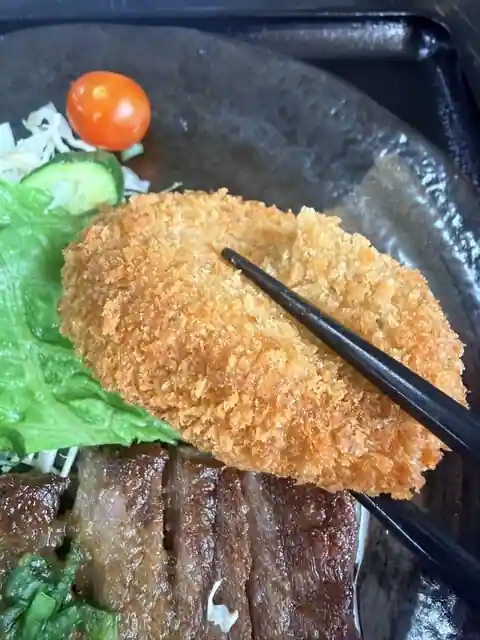
Takami Ushimaki Ba Chokubai Tokoro Agui No Sato
和さび
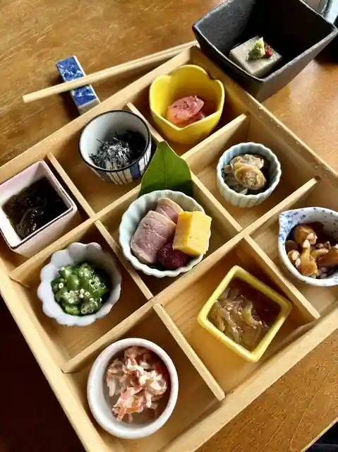
Wasa Bi
常来園
Tsune Raien
おにぎりと野菜のレストラン PREMIUM千華
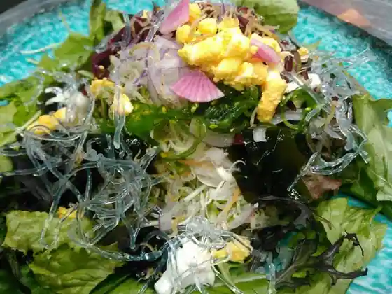
Onigirito Yasai No Restaurant PREMIUM Chika
麺家 七兵衛
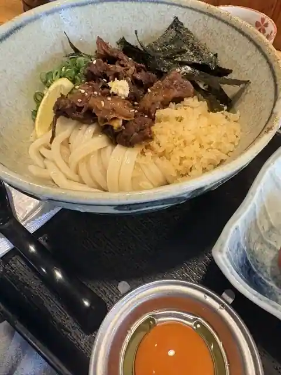
Men Ie Shichibyoe
餅の神田屋
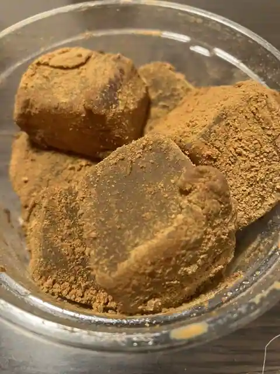
Mochi No Kanda Ya
第一旭 柏原店
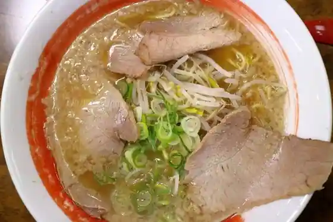
Daichi Asahi Kashiwabara
麺や 志
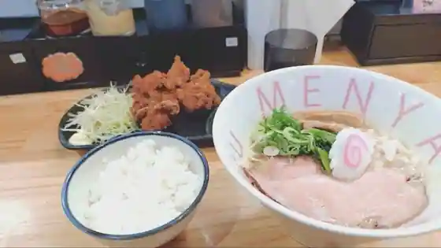
Men Ya Kokorozashi
genten
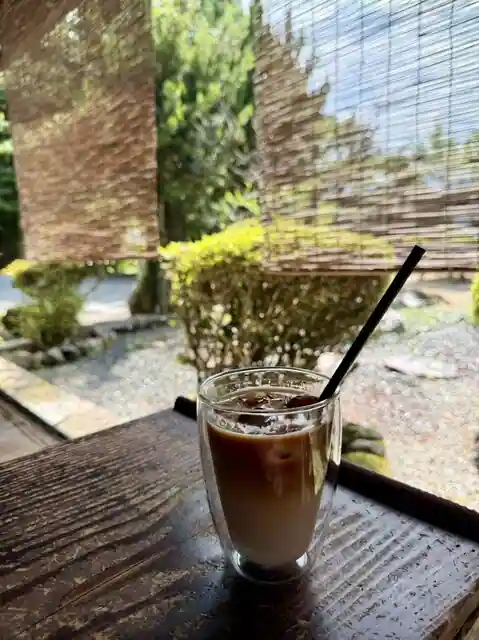
genten
レストラン山の駅
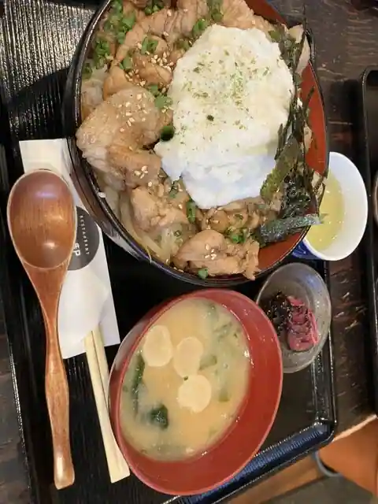
Restaurant Yama No Eki
cafe ma-no
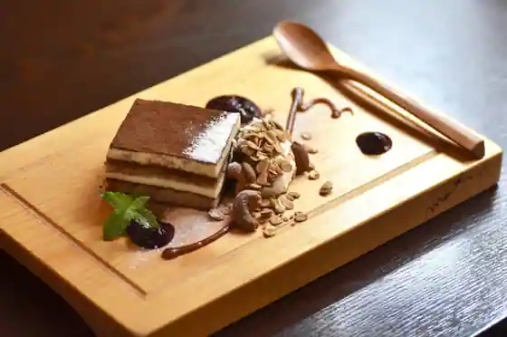
cafe ma-no
オルモ
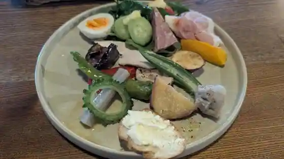
Orumo
Sights
FOREST DOOR - Kyushin Raku Shogakko
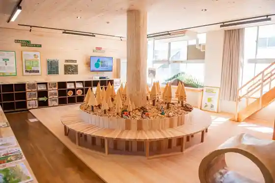
Genki Village Kamikuge Tamba Ryu no Sato Park
Byakugo Tera
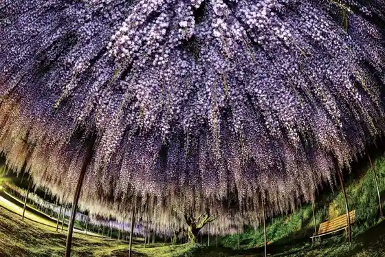